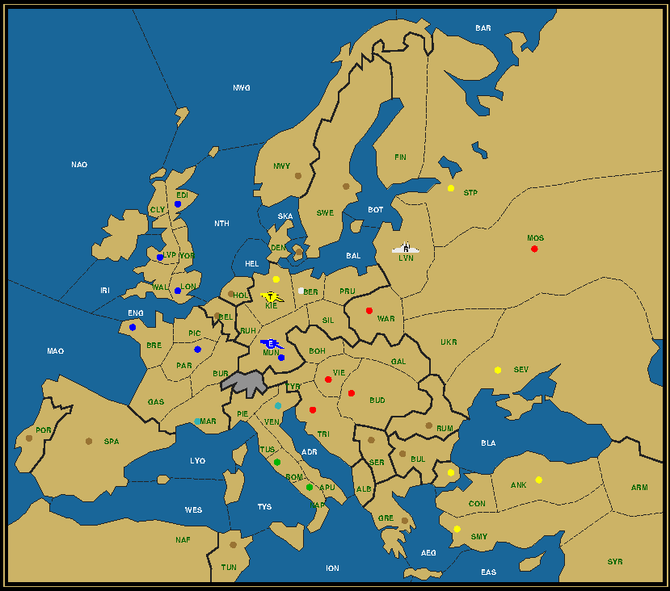
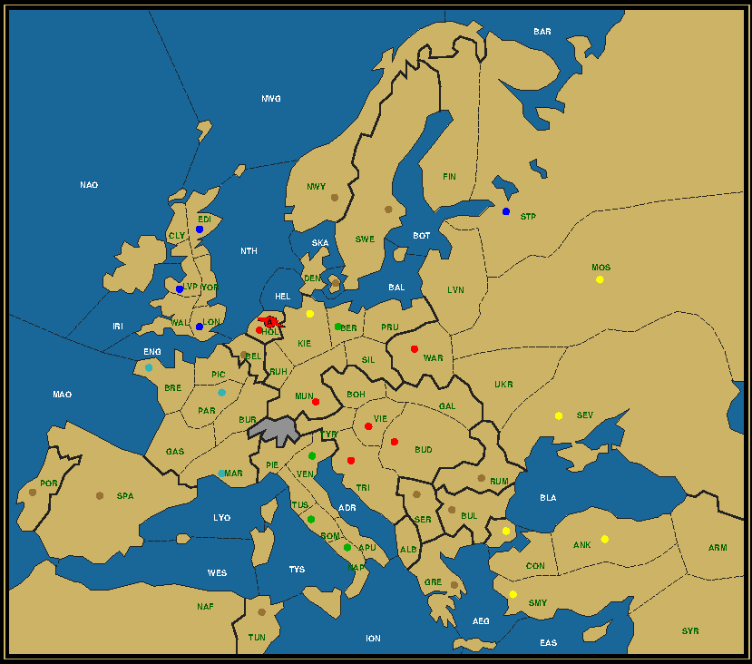

|
Last Man Standing is a puzzle on the Diplomacy board, where the objective is to reduce the number of units on the board to just one. This last surviving unit needs to arrive in a specific location (always a supply center) in a fixed number of game years (usually 4). Dislodge, capture, disband and occasionally build units using nothing but standard Diplomacy rules to achieve your goal. The first Last Man Standing article appeared in the Fall 2015 Retreat issue. Since then a new article was published in every successive issue, typically presenting two new problems (or missions) before solving (reporting) the problems from the previous issue. You can find a complete list under the Last Man Standing topic in the list of all Zine articles, which can also be reached by clicking on the LMS icon (of an army soldier taking aim) in the Zine issue index where it appears. Unless otherwise mentioned the board is the Standard Calhamer Diplomacy board with the initial setup remaining unchanged from the rulebook. Furthermore after two game years all powers must still have at least one unit on the board (the so-called rainbow condition or coalition). In most of the puzzles not a single neutral center can be taken during the course of the game, but passing through in Spring is allowed. E.g. The northern Russian fleet starting on the south coast of St. Petersburg regularly moves through Denmark in Spring 1902 to arrive in the North Sea in the Fall, usually dislodging another fleet there. In those puzzles that allow neutral centers to be captured (which include all puzzles where the end destination is a neutral center), a secondary goal is to capture as many of them as possible (*). Your main clue is a single map, usually showing the position after the final Winter or one year earlier (1904 or 1903), but read the accompanying text carefully for additional hints. For clarity, below the map is a table with information on center ownership and the positions of any units still on the board. The numbers between parentheses represent the number of units, followed by the number of centers. Here's how this map and table would look like for the first puzzle in the Holmes story of the same name, where army Liverpool becomes the first Last Man Standing in Berlin. The map shows the situation after the Winter of 1903, as is customary for games involving army Liverpool reaching the capital of one of the Great Powers.

Army Liverpool to Berlin, After Winter 1903 Austria (0/5) Bud Mos Tri Vie War England (1/6) A Mun / Bre Edi Lon Lvp Mun Par France (0/2) Mar Ven Italy (0/2) Nap Rom Russia (1/1) F Lvn / Ber Turkey (1/6) A Kie / Ank Con Kie Sev Smy Stp In case neutral centers can be taken, the map will still not show the ownership of any of the neutral centers (with the exception of any occupied by units), but you will know from the numbers in the ownership table below how many centers each power is supposed to own at that point in the game. Let's illustrate this with the second puzzle in the Holmes story, where the Baron had boasted of having captured all supply centers, but forgot to include Rumania. The map here is for the final position, after Winter 1904, with just one unit remaining. The home center it originated from is not indicated, another fact that needs to be derived. Note how all neutral centers except Holland, where the Austrian army stands, are still shown as unowned, but that center totals in the table below count up to 33.

Austrian army to Holland, After Winter 1904 Austria (1/8) A Hol / Bud Hol Mun Tri Vie War England (0/6) Edi Lon Lvp Stp France (0/5) Bre Mar Par Italy (0/6) Ber Nap Rom Ven Turkey (0/8) Ank Con Kie Mos Sev Smy Each solved puzzle is also available on UKDP, the DPjudge located in the UK. Click the Standard button and check for games starting with "lms_" in the list of completed games. The rest of the game name is composed of the abbreviated names of the starting location of the surviving unit and its final destination, separated by a hyphen. E.g. lms_war-ber for the LMS puzzle Army Warsaw to Berlin. Moreover the final Winter map is taken as the starting point for an actual game with real players, some of who get to play more than one power in order to give the smaller powers a fair chance. The name of this continuation game is the same as for the puzzle, but without the "lms_" prefix. E.g. game war-ber was played between Russia, Italy and a combined England/Turkey and surprisingly won by underdog Italy. A bit of terminology. Over the course of the puzzles LMS has acquired its own vocabulary, but the two most important concepts to understand are snipers and raiders. Snipers are units whose power is going to lose centers during the year, forcing it to disband units in Winter. It generally makes no sense to try to dislodge and retreat such units off the board, as it's cheaper and more flexible to disband them in Winter. They are thus excellent attackers and supporters, but keep them out of centers that they don't own (unless you need to keep their numbers up or plan to build a few more). Raiders on the other hand are units from powers that grow their center count or remain status-quo. The only way to remove them is to dislodge and take them off the board. Apart from being excellent cannon fodder they are the ones that capture the centers from the sniper countries, so don't be too hasty to dispose of them. It's possible for a sniper country to become a raider country and vice versa over the course of a game. Since this can become confusing, the term sniper country is used in a broader context to denote any power that needs to disband units during Winter after the first year. E.g. at the end of Holmes' additional solution for the second puzzle Russia still owned a single center, so that its last fleet needed to be dislodged, just like any other raider country. But since it was losing centers in the second year that forced it to disband a couple of units, we still consider it to be a sniper country. Units in mission reports (solutions) are usually identified by the type and home center in which they originated, all in abbreviated form. English Army Liverpool thus becomes A Lvp, wherever it is on the board, while the Russian fleet starting on the south coast of St. Petersburg is known throughout as F Stp. If a unit was newly built during the course of the game, it will usually be referred to as "new" or "second", e.g. the second F Stp, except if its type defers from the original unit, e.g. A Stp. (*) Contact the author if you find a solution with more neutral centers than the published solution, or if, heaven forbids, a solution contains some error.
|